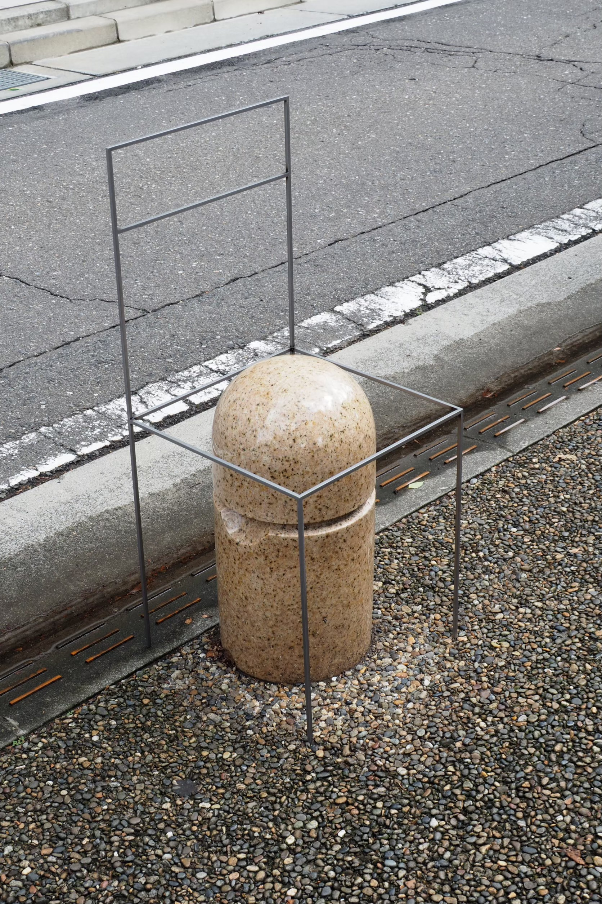
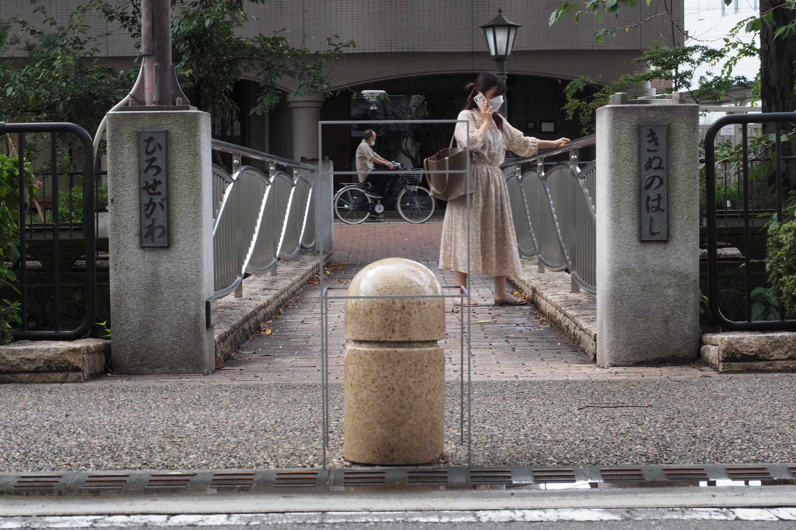
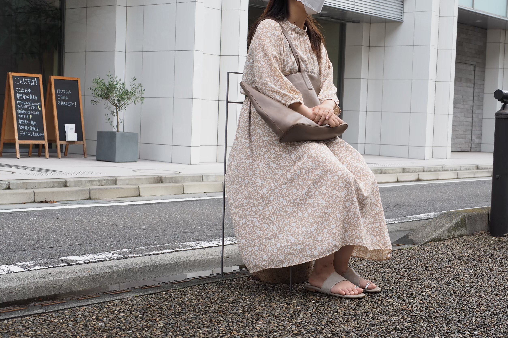
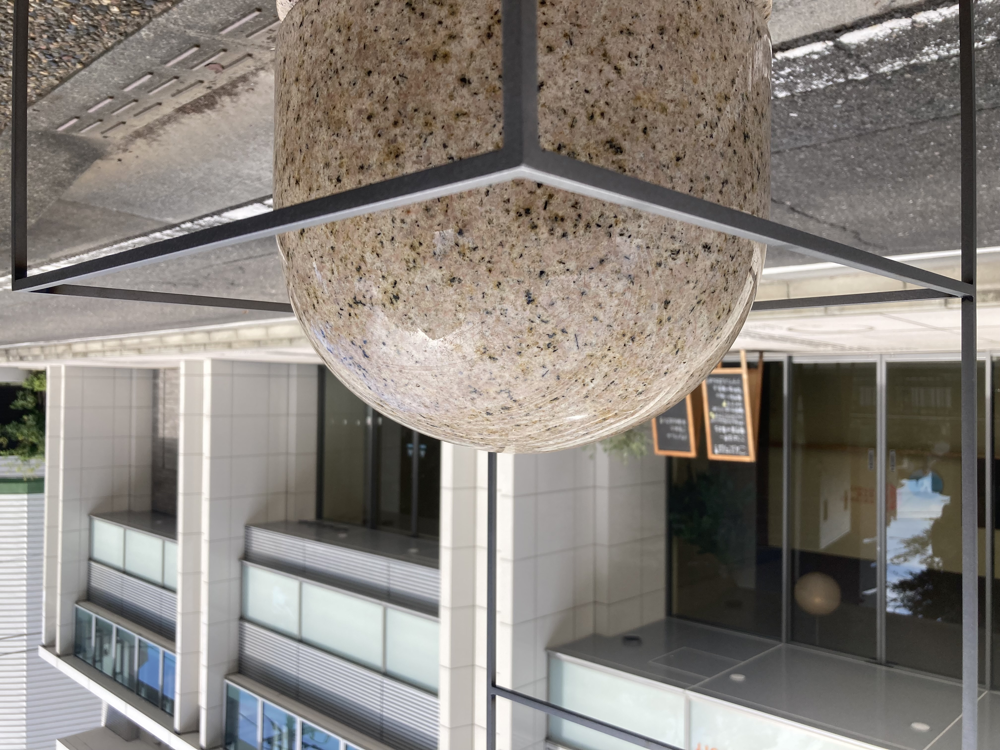
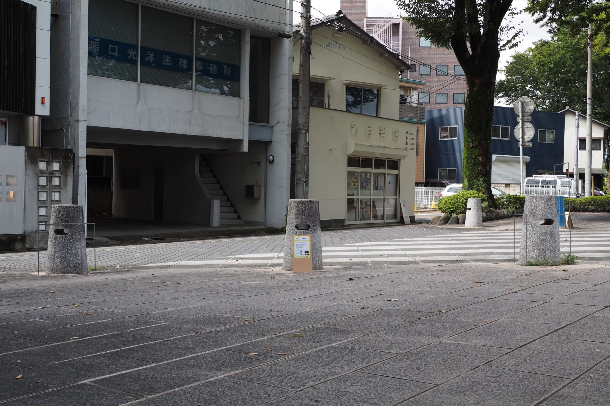

Not a Chair
CONCEPT
「これは椅子ではない(Not a Chair)」というタイトルの通り、 “座るためのもの” から少しはみ出したストリートファーニチャーの在り方を探ったプロジェクト。 歩道の途中に現れる小さな段差やブロック、縁石など、 すでにまちにあるものの見え方をずらすことで、 ふと立ち止まれる場所をつくろうとしている。
OUTLINE
・場所：仙台市広瀬川周辺
・内容：ストリートファーニチャー／サイン計画／撮影
・担当：コンセプト立案・スケッチ・現地検証・制作ディレクション
NOTE
既存のボラードや植栽帯、擁壁などに最小限の操作を加え、
そこに「座る」「寄りかかる」「腰掛ける」といった行為が
立ち上がるかどうかを実験した。
建築的なスケールよりも小さく、家具よりも公共的なスケールの中間に
身体を置くことで、まちとの距離感を調整することを試みている。
PHOTOS



